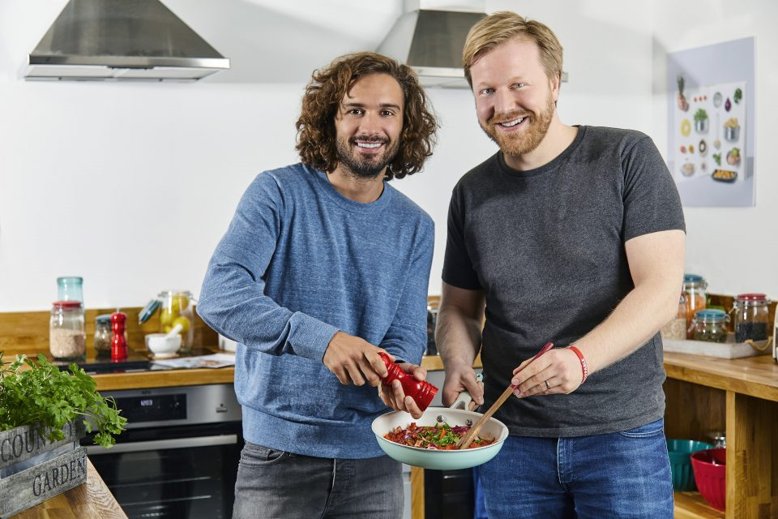

A Reciepe box firm Gousto to be known as the latest tech “unicorn “

The firm is believed to have raised a grand total of 25 million euros in a new funding round.
Considering the new payment that which is coming from the existing partners BGF and Perwyn.
Timo Boldt, the Cheif executive and founder, said: Achieving tech unicorn status and joining the ranks of those elite companies that have attained a billion dollar valuation is proud moment for the team.